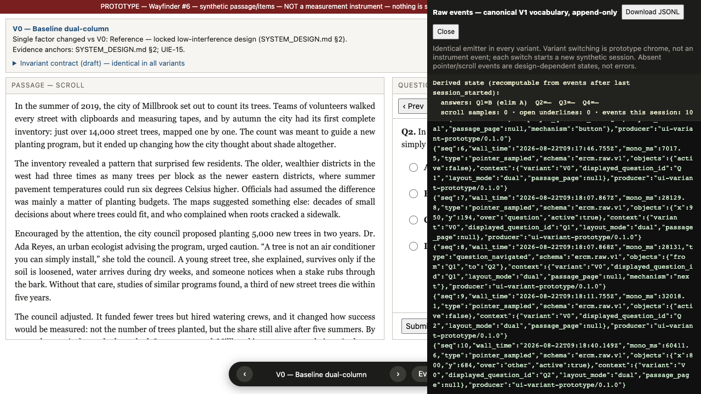
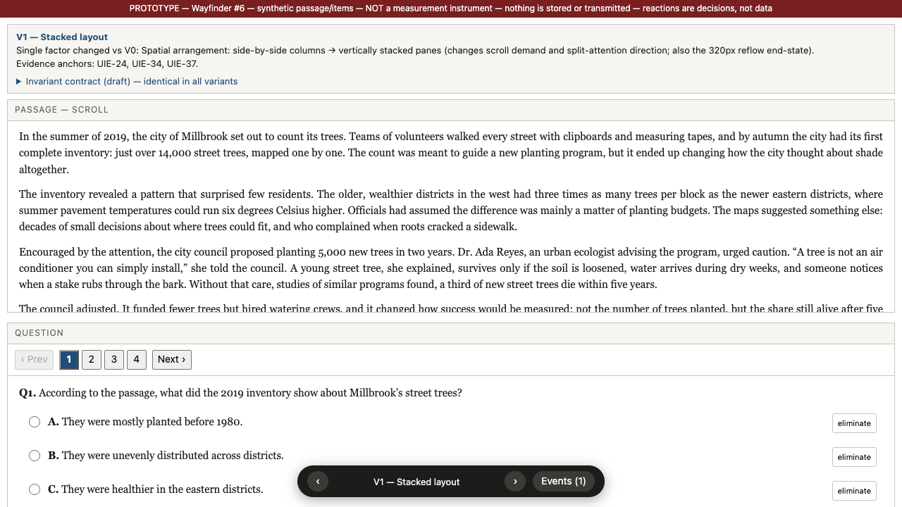
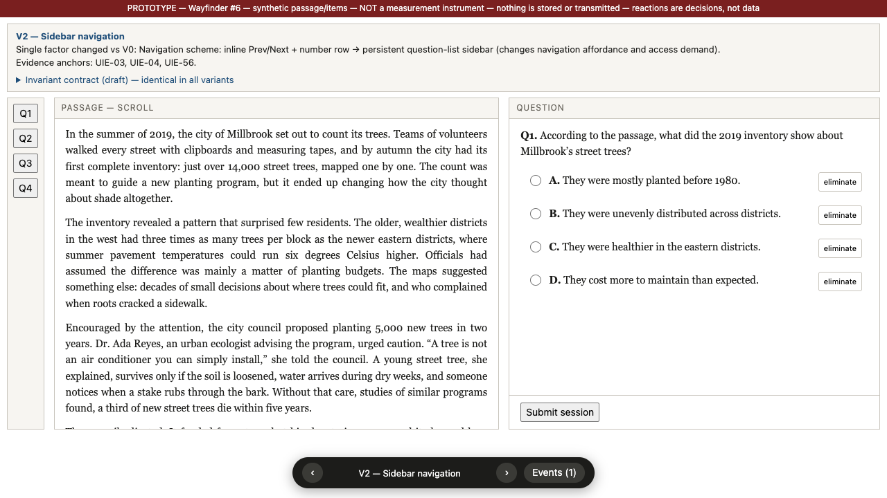
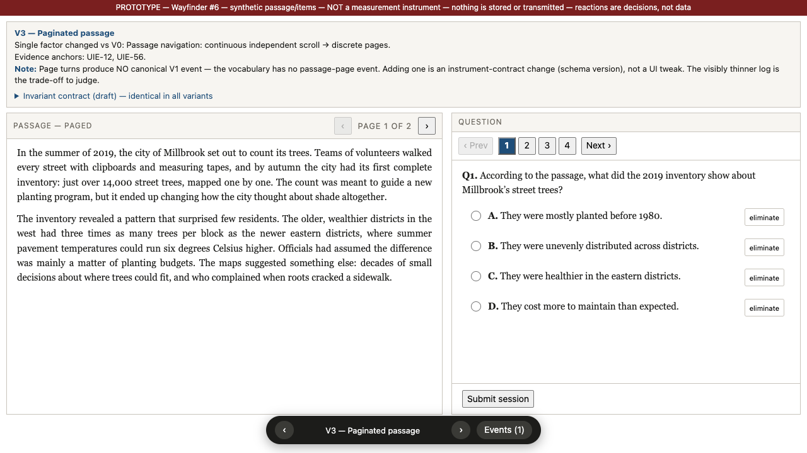
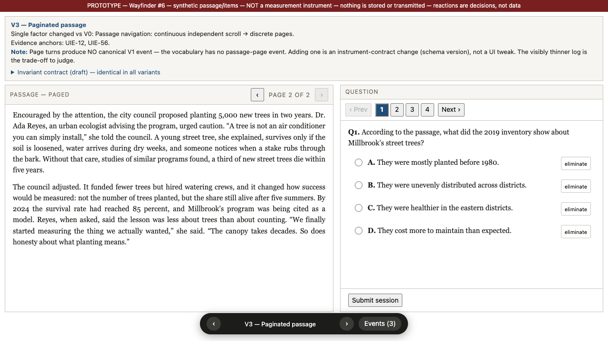
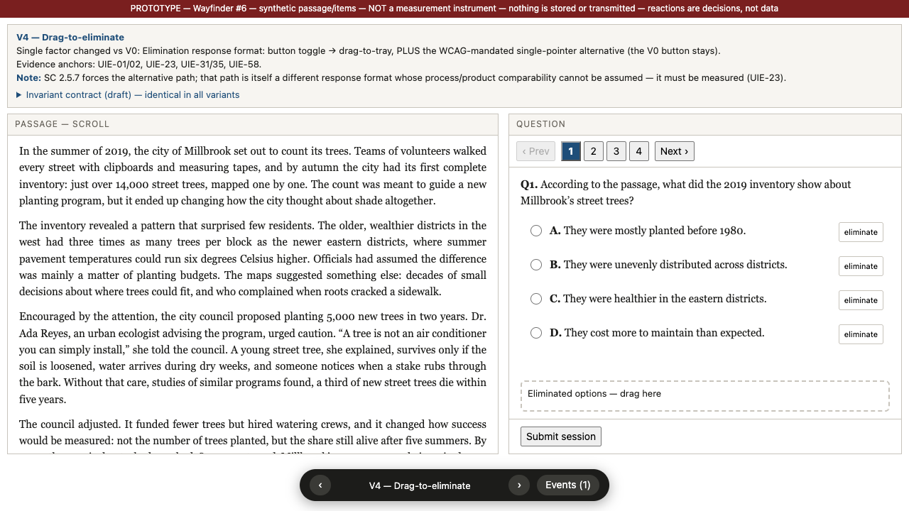
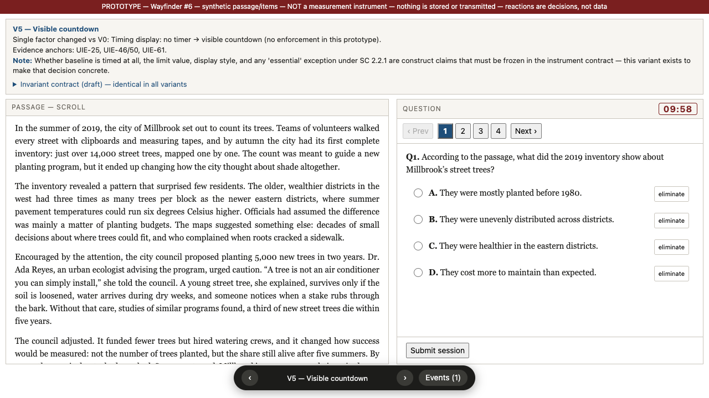

PROTOTYPE 说明件 — 决策支持，不是研究证据，不是仪器
Wayfinder #6：baseline 作答 UI 候选变体与不变量合同
配套原型：index.html（同目录，双击打开，底部浮条或 ←/→ 切换 V0–V5）。本页回答三件事：每个变体到底哪里不一样、表格里每个「证据锚点」具体说了什么、去哪核实、不变量合同与被否替代的每一条为什么。所有负载结论的原始裁决在 UI 仪器效应证据审计（下称「审计」），锚点编号 UIE-xx 即审计证据表行号；每行在审计里都钉到本地 PDF 物理页码。
V0 — 基线双栏（参照系，不是候选变化）

V0：左侧篇章独立滚动，右侧一次一道题；右下「Events」抽屉为实时 canonical V1 原始事件流与可从事件重算的派生状态（图中：Q1 选了 B、排除了 A，全部由事件回放得出）。
V0 是已锁定的低干扰 paper-native 设计（reports/synthesis/SYSTEM_DESIGN.md §2）：篇章独立滚动；一次一题；Prev/Next + 题号跳转；可选文、划线/删划线、排除/恢复选项、自由改答案；不强制阅读顺序、不逐题提交、不要解释或 confidence；不用 Mouselab 式隐藏正文。其余五个变体各自只相对 V0 改一个因子。
UIE-15 PROJECT-INFERENCE：把 visibility_changed、layout_changed 这类系统 UI 事件当一等语义事件保留（而不是当噪声过滤），是我们项目自己的仪器合同决策，依据是 D5 论文的任务级抽象先例与 SYSTEM_DESIGN §4——没有任何本地论文实测过这些事件在阅读 UI 里的价值。核实：审计证据表 UIE-15 行。
V1 — 纵向堆叠布局

V1：唯一变化 = 空间排布从左右双栏改为上下堆叠（篇章在上、可独立滚动，题目在下）。仍一次一题、其余控件与 V0 完全一致。
单因子：空间排布方向（水平分离 → 垂直分离），直接改变滚动需求量与「篇章↔题目」的视线/指针往返距离。
UIE-34 SUPPORTED：屏上距离与滚动需求会改变交互时序——内容对调（source/target 距离变大）使拖拽时间显著变长（B=.264, p<.001，作者归因 Fitts 定律）；需要滚动的题 transition pause 普遍更长；作者在讨论中明确建议「应试者不应需要滚动」。来源：METHOD-016（Arslan et al. 2020，476 名成人数学 D&D），PDF pp.7–10。对 V1 的含义：堆叠改变篇章与题目之间的屏上距离和滚动需求，即直接进了行为空间与时间分布。
UIE-37 SUPPORTED（跨域）：布局的空间整合（图例嵌进图形，减少 split attention）显著降低解题时间（74.7s→55.4s，log-time γ=−0.27, p<.001）但对成绩无显著主效应。来源：METHOD-033（Moon et al. 2022，成人几何单选）。注意它是几何题不是阅读，迁移到阅读作答 UI 是 PROJECT-INFERENCE——这正是要原型化、将来要 H2 实测的原因。
UIE-24 SUPPORTED（标准）：WCAG 2.2 SC 1.4.10（Reflow，AA 级）要求内容在 320 CSS px 等效宽度下不丢信息、不要求二维滚动。
规范原文；本地归档 STANDARD-003，引文逐字核验一致。
对 V1 的含义：双栏在高缩放/窄屏下
必须重排成堆叠——也就是说 V1 不只是「候选变体」，它就是 V0 在 320px 下的法定终态；两者必须当作同一仪器在缩放连续谱上的两个状态来理解，重排切换本身要记
layout_changed 事件。
要你裁决的点：V1 是否留在候选集？它几乎肯定会是 reflow 终态（那就不是「可选变体」而是合同义务），但作为起始布局是否也值得进 H2 变体研究，是另一个问题。
V2 — 侧栏导航

V2：唯一变化 = 导航方案。题号行换成常驻左侧题目列表侧栏（Q1–Q4，含当前高亮；不含作答状态点——状态可见性是另一个独立因子，故意不混入）。
单因子：导航 affordance 与访问成本（一次性看到全部题目 vs 只能 Prev/Next + 题号）。
UIE-03 PARTIAL：超文本布局 affordance（标签页位置）会塑造导航选择——PISA 2018 学生「图方便地」更多点击离首页更近的标签。来源：B2（PISA 2018 Rapa Nui 单元，16,957 名 15 岁学生），PDF p.10；相关性证据，非布局操纵实验。
UIE-04 SUPPORTED：任务访问需求同时移动导航量与导航-成绩关系——访问需求→访问行为 b=3.16；访问行为→数字阅读成绩 b=0.35（超出印刷阅读技能），且斜率随任务需求变化。来源：B3（PISA 2009，29,395 人，17 国），PDF pp.7, 11–12。对 V2 的含义：侧栏显著降低「看看还有哪些题」的访问成本，按此证据会改变导航分布本身。
UIE-56 SUPPORTED：PISA 2009 原始出处级证据——页级导航指标在控制印刷阅读能力后仍有大额增量预测（相关页数 ΔR² 平均 23%）；访问量与成绩呈倒 U；「回访」的意义随任务翻转（有的任务回访是好策略，有的与低能力相关）。来源：METHOD-024（OECD 2011，约 5 万名 15 岁学生），PDF pp.98–103, 116–121。对 V2 的含义：导航是可携带信息的通道，但其含义依赖任务结构——导航方案变了，导航派生指标的解释也变了。
要你裁决的点：导航方案变体进入候选集吗？注意连锁：导航分布变 → 「没有导航事件」的含义也变（缺失的成因变），这直接影响下游过程指标的口径。
V3 — 篇章分页

V3：唯一变化 = 篇章导航从连续滚动改为离散翻页（Page 1 of 2，每页两段）。题目面板与 V0 一致。

V3 翻到第 2 页后：翻页动作不产生任何 canonical V1 事件（事件计数只多了一个 pointer_sampled——那是点击时鼠标移动产生的）。滚动采样流整个消失。
单因子：篇章导航形态（连续滚动 → 离散页）。
UIE-12 SUPPORTED：B7 实验把故事「分页为 3–4 页以防止滚动」——审计标注：这是一个压缩可观察行为空间的设计决策；同一研究还记录了系统崩溃、题目泄露、24% 非随机缺失等仪器/情境对事件完整性的侵蚀。来源：B7（443 名八年级学生），PDF pp.4–5。
UIE-56（见 V2 节）：PISA 2009 全部导航证据都是页级的；审计局限节明确指出，把「页访问」映射到「单篇可滚动文档的区域可见性」是未验证的 PROJECT-INFERENCE。
要你裁决的点：这是原型最想让你亲手感受的权衡——canonical V1 词汇表没有翻页事件，所以 V3 的日志肉眼可见地变薄：滚动的连续轨迹（位置、速度、回读）全部消失，换来的是语义更干净的「页」边界。若 V3 入选，要么接受观测压缩，要么给词汇表加翻页事件——而加事件 = 仪器合同变更 + schema 版本升级，不是 UI 小改。这个二选一必须显式记录。
V4 — 拖拽排除（+ 强制的单指替代路径）

V4：唯一变化 = 排除操作的反应格式。选项可拖入底部「Eliminated options」托盘；按 WCAG 2.5.7，V0 的 eliminate 按钮必须同时保留作为单指针替代路径。已验证：拖入触发 option_elimination_toggled {mechanism:"drag"}，按钮路径触发 {mechanism:"button"}——同一状态变化，两条过程轨迹。
单因子：排除/恢复的作答反应格式（按钮切换 → 拖放入托盘）。这是证据最硬的一个因子：
UIE-01/02 SUPPORTED：反应格式同时移动过程指标与产品分数——drop-down 的分数显著高于 D&D（OR=1.40, p=.026），尽管交互更多（过程-产品解离）；且 D&D 的优势方向在排序与分类任务间翻转（任务权变）。来源：B7（被试内随机实验，443 名八年级 ELA 学生），PDF pp.1, 6, 9。
UIE-31 SUPPORTED：只改题目表面特征、内容恒定，策略分布大幅移动（对数优势比 4.690 / 0.922，均 p<.001），动作数与拖拽时间也动；构念相关与无关特征的分数移动方向不同。来源：METHOD-016，PDF pp.6–9。
UIE-35 SUPPORTED：在三种真实阅读理解任务（句序/图形组织器/完形）中，D&D vs 键入一致移动执行层指标——响应时间 d=−0.62、点击数 d=−1.13；平均分数不动但低表现学生 D&D 显著更高（d=0.57, p=.010）——平均值的 null 掩盖了亚组移动。来源：METHOD-032（智利 4/6/8 年级），PDF pp.12–13, 16–17, 20–22。
UIE-58 SUPPORTED：操作性 50 万人 PISA 2018 阅读机考中，反应格式是脱离投入行为的最强预测因子——simple MC 的 rapid guessing 几率是 open-ended 的 OR=23.10；格式改变「分数里猜测成分」的构成。来源：METHOD-023（OECD 2024，67 国 499,387 人），PDF pp.15–16, 19–20。
UIE-23 SUPPORTED（标准）：WCAG 2.2 SC 2.5.7（Dragging Movements，AA）：任何拖拽功能必须有不拖拽的单指针实现路径。
规范原文。审计的关键提示：这条替代路径
本身就是另一种反应格式，它携带自己的过程分布——两条路径的过程指标可比性不能假定，必须实测（UIE-31/35 直接支持这一担忧）。
要你裁决的点：拖拽排除是否进候选集？支持进：格式因子是唯一有「会移动 estimand」直接证据的因子层级。反对进：paper-native 基线刻意保持简单，且拖拽天然排除触屏/部分辅助技术用户之外的等价性未证。原型里两条路径并存就是 SC 2.5.7 下的真实形态。
V5 — 可见倒计时

V5：唯一变化 = 计时显示。题目面板右上角出现倒计时（原型 10:00，仅显示、到零不强制任何动作——执行政策本身就是待裁决项）。
单因子：计时信息的可见性（无 → 有）。
UIE-25 SUPPORTED（标准）：WCAG 2.2 SC 2.2.1（Timing Adjustable，A 级）要求时限可关闭/调整/延长；「essential」例外只适用于「时限是必要的且延长会使活动无效」。
规范原文。审计裁决：
援引 essential 例外 = 主张速度属于被测构念，这是一个构念主张，必须照此记入仪器合同。
UIE-46 SUPPORTED：时间压力显著调节纸/屏模式效应——限时 g=−0.26 vs 自定步调 g=−0.09（QB=4.12, p=.04）。来源：METHOD-018（Delgado et al. 2018 元分析，k=56/18），PDF pp.9–13。
UIE-50 SUPPORTED：另一元分析中方向同样随计时翻转——限时条件 −0.468（p=.001）vs 自由阅读 +0.192（ns）。来源：METHOD-022（Li & Yan 2024，37 研究/46 效应）。
UIE-61 PARTIAL（编辑共识）：语言测评领域资深编辑的框架性共识明确把「是否设时限」列为构念决策。来源：METHOD-026（Language Testing 特刊结语），PDF pp.2–3。
要你裁决的点：baseline 到底限不限时？限多少？显示成什么样（倒计时/已用时/按需查看）？这些都不是工程默认值，而是构念主张；决议将直接喂给 #8（计时器状态属于被记录的 UI context）。
不变量合同草案 — 8 条逐条解释
以下性质在 V0–V5 全部相同，且任何未来变体都不得破坏。每条附上「破坏了会怎样」。
| 不变量 | 为什么是不可动的 |
|---|
| ① canonical V1 事件词汇与字段（wall_time / mono_ms / sequence / type+schema version / 语义对象 ID / UI context / producer 版本）；append-only；raw 不写认知标签 | 跨变体可比性与确定性回放的根基。词汇或字段一变，两个变体的事件流就不再同度量，BENCH-E0 的重放保真无从谈起；raw 写入认知标签会污染整条测量链（SYSTEM_DESIGN §4）。 |
② 一次一题；displayed_question_id 只是 UI context | 它不代表学生此刻在思考哪题；若把显示题当认知事实，所有「按题归组」的过程指标都带着未声明的误归属。 |
| ③ 自由跳题、自由改答案、排除/恢复；不强制顺序、不逐题提交、不要解释/confidence | 这是已锁定的低干扰 paper-native 边界。逐题提交会消灭「改答案」这个行为本身；强制顺序会消灭导航行为——都是在改被测量的任务，不是改 UI。 |
| ④ 无对错反馈、无提示、无自适应 | 反馈会重组行为（UIE-07：游戏化反馈仪表盘把交互序列中心整个移走）且改变被测构念——给反馈的仪器测的是另一个东西。baseline 是测量仪器，不是教学系统。 |
| ⑤ 篇章动作（选文/划线/滚动）不自动归属当前显示题 | SYSTEM_DESIGN §2 锁定。学生划线时可能在想任何一道题；自动归属会给 evidence packet 注入假证据。 |
| ⑥ 缺席信号 = 设计依赖状态，不是仪器故障，绝不插补 | UIE-11：66.3% 被分配学生从未导航；UIE-13：光标 58.8% 时间不活跃。把缺席当错误去「修复」或当脱离投入证据，都是在伪造数据（原型用 pointer idle 单发一条 active:false 演示这个语义）。 |
| ⑦ 变体不得新增事件类型 | 需要新词汇 = 仪器合同变更 + schema 版本升级（V3 的翻页就是演示案例）。否则「同一个 benchmark」名存实亡。 |
| ⑧ WCAG 2.2 地板：SC 2.5.7（拖拽必有单指替代）、SC 1.4.10（320px 重排）、SC 2.2.1（计时可调；essential 例外=构念主张）、SC 2.5.8（指针目标 ≥24×24 CSS px） | 规范义务 + 公平性框架（UIE-18，STANDARD-001：无障碍障碍会导致不同群体对分数的不同解释）。违反不只是合规问题，是给特定子群引入构念无关方差。 |
被否替代 — 逐条理由
| 被否的候选 | 否决理由 |
|---|
| Mouselab 式隐藏正文（ hover 才显示文本） | SYSTEM_DESIGN §2 已锁定否决：它用更整洁的观测换取对自然搜索过程的改变——观测收益建立在污染被测行为之上。 |
| 对错反馈 / 提示 / 自适应路径 | 改变被测构念（见不变量④）；baseline 阶段系统的职责是测量。 |
| 逐题提交 / 提交后锁定 | 消灭答案修改行为，违反锁定边界（不变量③）。 |
| 作答中要求解释或 confidence 自评 | 属 COL-L2 显式认知报告，仅研究面可用；塞进 baseline 会破坏低干扰属性。 |
| 多因子捆绑变体（如「侧栏+状态点+新配色」） | 因子混杂后效应不可归因——变体研究的全部意义就在单因子对照。 |
| 纯视觉变体（配色/字体/密度） | 不是仪器层结构因子；且措辞粒度级变化在 N=206,153 的 PISA 背景问卷中零效应（UIE-40）——粒度划定了「值得做变体」的下限。 |
| 侧栏带作答状态点（V2 的「自然」加强版） | 把「进度可见性」混进导航因子，人为制造混杂；原型里 V2 故意只给裸题号。想要状态可见性，未来单列一个因子。 |
| 给 V3 悄悄加翻页事件类型 | 词汇表变更必须走仪器合同 + schema 版本（不变量⑦），不能借 UI 变体偷跑。 |
未决问题流向
- → #8（BENCH-E0 logging/replay 验收合同）：canonical V1 词汇表与字段的最终冻结；V3 暴露的「翻页事件要不要进 schema v1.1」；V5 暴露的「计时政策=构念主张，计时器状态属被记录 context」；指针采样率/空闲语义（已发表仪器论文自己都不报告采样率——审计 Class-3 节）；320px 重排合规的实测义务。
- → #13（UI-variant estimands 与探索-确认边界）：候选集内每个因子的 estimand 假设、亚组交互（UIE-35 的低表现者移动）与缺失口径。
- → H2-gated 变体研究：within-mode 变体构念等价性文献无法证伪（审计核心债），只能真人实测；探索性 pilot 数据不得同时充当确认性证据（UI 专用通道第 6 步）。
- → 持续开放：Class-1 可用性/偏好实证是领域共识级缺口（UIE-61）；设备/浏览器范围冻结（desktop-first？平板？）按 METHOD-015 的举证责任规则走。
谱系：2026-08-22 为 GitHub issue #6（父地图 #2）的 resolution 制作；配套原型 index.html 与截图 shots/ 同目录。本页与原型为一次性决策支持工件，将随决议捕获到 throwaway 分支；不构成任何变体「更好测量」的证据。